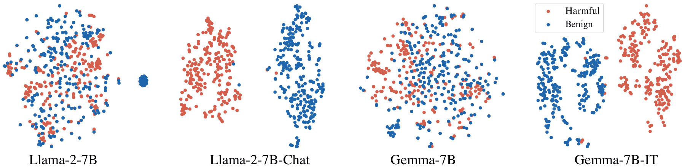
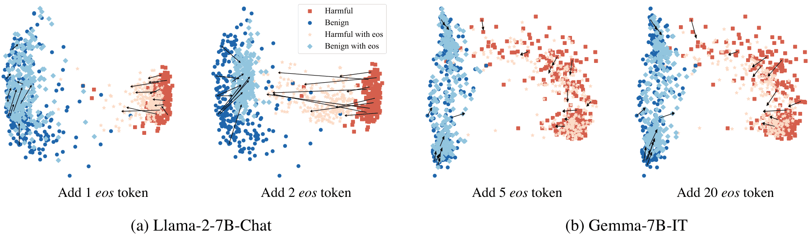
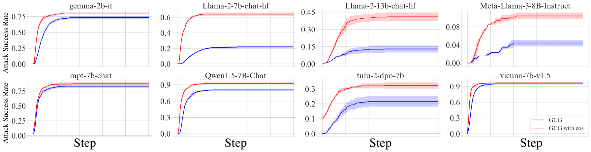
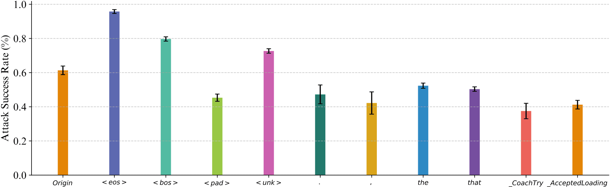

Vicuna-1.5-7B Direct request · no jailbreak strategy
0%71.09%
+71.09 percentage points in ASR
Harmful question alone → with BOOST
End-of-sequence tokens move prompts toward the refusal boundary.
 1Northwestern University
1Northwestern University 2University of California, Santa Barbara
2University of California, Santa BarbaraSafety alignment teaches a model to separate harmful from benign prompts in its hidden space. That separation is a boundary, and a boundary can be moved.
Supervised fine-tuning and reinforcement learning from human feedback train a model to refuse harmful requests. The paper asks what this training builds internally, and whether the structural tokens used during fine-tuning can shift a prompt across what it learns.
To look inside, the authors pair 256 harmful questions from AdvBench with benign versions that change only a few words. They project the last-token hidden state from the -10th layer into two dimensions with t-SNE.
In the base models, harmful and benign prompts overlap: their wording is nearly the same.
In the aligned chat and instruction-tuned versions, the two groups separate cleanly. The paper calls this learned separation the refusal boundary. A jailbreak has to move a harmful prompt across it.
Figure 2 · -10th layer · t-SNE
Base: Llama-2-7B, Gemma-7B · Aligned: -Chat, -IT

The end-of-sequence (eos) token marks the end of a text segment during fine-tuning. A prompt followed by several eos tokens is a structure the model rarely sees. The paper argues that the model then reads the input as several segments rather than one request, and calls this context segmentation. With eos tokens appended, both harmful and benign prompts move toward the refusal boundary. The shift is smaller on Gemma-7B-IT, even with 20 eos tokens.
The movement runs in both directions: the paper also shows aligned models refusing harmless prompts once eos tokens are added.

BOOST adds nothing but end-of-sequence tokens. It strengthens existing jailbreak methods instead of introducing a new one.
The paper's aim is to measure a weakness in how aligned models learn to refuse. BOOST is the probe: it combines with an existing attack by appending eos tokens to its prompt, and the change in attack success rate (ASR) shows how much the refusal boundary moves.
The original prompt \(x\) is concatenated with \(n\) eos tokens. The count \(n\) is a hyperparameter.
Context segmentation acts on the prompt-level representation, the model's overall judgment of the input. It moves \(x'\) toward the refusal boundary in that space.
A prompt near the boundary is easier for an existing jailbreak to push across. On its own, a shift does not guarantee a harmful answer.
Appended tokens can distract the model from the request. Softmax gives every token some attention, a property also studied in OutEffHop.
In Llama-2-7b-chat, the attention values and outputs of eos tokens are much lower than those of GCG suffix tokens (Figure 6). So the eos tokens change how the prompt is classified without pulling the response off-topic.
Sections 3.1, 3.2, and 4. The attention comparison uses the -10th layer, head 0, following prior work on quantizable transformers. Read Section 3 ↗
The appendix gives a Bayesian reading of how the refusal boundary forms during alignment. Section 3.3 compares BOOST with other ways of crossing the boundary: gradient-optimized suffixes, jailbreak templates, few-shot benign instructions, and prompt injection. The comparison measures the distance from a modified prompt to the centroid of benign prompts in the same projection.
The two effects act at different levels. Low token-level attention keeps the eos tokens from changing how the original request is represented. The prompt-level shift changes how the whole input is classified. Read Sections 3.3 and 4 ↗
Vicuna-1.5-7B Direct request · no jailbreak strategy
Harmful question alone → with BOOST
Llama-2-70B-chat GPTFuzzer · largest Llama-2 model tested
GPTFuzzer → GPTFuzzer with BOOST
With 10 eos tokens appended, GCG reaches a higher final ASR on all eight models in Figure 7. The largest gains are on Llama-2-7b-chat, from 21.9% to 64.1%, and Llama-2-13b-chat, from 13.0% to 40.9%. The gain on Vicuna-7B-1.5 is small because GCG already succeeds there. On tulu-2-7B, the initial prompt with eos tokens exceeds 10% ASR before any optimization step.

In-context attacks (ICA, with one to three demonstrations) and competing objectives (CO) need no optimization, and on their own they almost never succeed against these models. Adding eos tokens makes most of these attacks succeed at least some of the time. The largest changes come from the harmful question with eos tokens alone.
| Model | 1-shot ICA | 2-shot ICA | 3-shot ICA | CO | Direct |
|---|---|---|---|---|---|
| gemma-2b-it | 0→0.78 | 0→0 | 0→0.78 | 0.78→6.25 | 1.56→12.50 |
| llama-2-7b-chat | 0→10.94 | 0→1.56 | 0→3.12 | 0→6.25 | 0→9.38 |
| llama-2-13b-chat | 0→1.56 | 0→7.03 | 0→3.91 | 0.78→2.34 | 0→0.78 |
| llama-3-8b-it | 0→0 | 0→0.78 | 0→1.56 | 0.78→3.90 | 0→5.47 |
| mpt-7b-chat | 1.56→16.40 | 2.34→17.18 | 7.03→22.65 | 14.06→16.40 | 5.47→15.63 |
| qwen-7B-chat | 0→6.25 | 0→3.12 | 0.78→3.12 | 1.56→3.90 | 0→10.94 |
| tulu-2-7B | 0→3.91 | 0.78→6.25 | 0.78→16.62 | 3.91→45.32 | 0.78→68.75 |
| vicuna-1.5-7b | 0→3.91 | 0.78→4.69 | 1.56→7.81 | 3.12→67.18 | 0→71.09 |
Each cell shows the original attack's ASR, then the ASR with eos tokens appended. The paper searches over 1 to 19 eos tokens per question for these attacks and counts a success if any count works, because the effect depends on the exact number. Model names follow the paper's table.
Table 1 & Section 5.4The appendix extends the evaluation to four models of 70B parameters or more. BOOST raises ASR in almost every cell. The one decrease is DrAttack on Llama-3.1-70B, from 16.1% to 13.7%.
| Model | GCG | GPTFuzzer | AutoDAN | DrAttack | TAP |
|---|---|---|---|---|---|
| Llama-2-70B | 2.5→37.6 | 5.7→51.3 | 2.4→10.2 | 25.5→30.9 | 11.6→13.8 |
| Llama-3.3-70B | 6.7→17.6 | 1.9→27.2 | 0.2→0.7 | 12.0→12.7 | 6.4→7.0 |
| Llama-3.1-70B | 8.4→26.8 | 3.6→39.9 | 0.3→0.7 | 16.1→13.7 | 7.5→14.3 |
| Qwen2.5-72B | 14.4→31.2 | 36.1→47.5 | 35.6→41.1 | 40.2→49.4 | 43.6→47.6 |
Values from Table 6 of the published paper. Table 7 reports the same comparison on JailbreakBench. See Tables 6 and 7 ↗
On Gemma-2B-IT with GPTFuzzer, appending eos tokens raises ASR from 61.2% to 97.3%. Two other control tokens also help: bos reaches 79.2% and unk 72.58%, while pad does not. Common words, punctuation, and rare under-trained tokens do not raise ASR above the original. This suggests context segmentation is tied to tokens with a structural role in training, not to any appended token.

The evaluation covers 16 open-source models from 2B to 72B parameters and eight jailbreak methods. Two are white-box (GCG, AutoDAN), and six are black-box or heuristic (GPTFuzzer, DrAttack, TAP, ICA, CO, and the direct question).
The effect varies by model. The paper sees large gains on Llama-2 and Llama-3 models and smaller ones on mpt-7b-chat. It suggests that models trained with unusual control-token placements may learn a more robust boundary.
Filtering eos strings out of user input is a simple defense. The paper checks whether four commercial APIs apply it, using a non-harmful probe: it asks the model to repeat or identify a candidate eos string, then checks whether the response is cut off.
| Claude-3-opus | GPT-4o | Gemini-1.5-pro | Qwen-max | |
|---|---|---|---|---|
| Tokenizer released | No | Yes | No | Yes |
| Successfully probed | Yes | Yes | No | Yes |
| eos not filtered | Yes | Yes | — | Yes |
Three of the four models were probed successfully, and none of those three filtered the eos string at the time of writing. For Gemini-1.5-pro, no candidate eos string could be confirmed, so the paper draws no conclusion about its filtering. With GPTFuzzer, BOOST also raised ASR on GPT-4o-mini and Qwen-max, from 91.8% to 96.2% on the latter. The paper notes that providers may have updated their policies after disclosure.
Filtering alone is not enough, the paper argues. Section 7 shows that modified eos strings and varied insertion positions keep most of the effect. It recommends training on inputs with unusual control tokens, using the separation between harmful and benign representations as an alignment signal, and adding control-token probing to red teaming.
The authors reported their findings to OpenAI, Meta, Alibaba, Google, Mistral.ai, and Databricks, and released code and data. The paper contains examples of harmful model outputs; this page reproduces none of them.
Ethics considerations & recommendations ↗@inproceedings{yu2025mind,
title = {Mind the Inconspicuous: Revealing the Hidden Weakness in
Aligned {LLMs}' Refusal Boundaries},
author = {Jiahao Yu and Haozheng Luo and Jerry Yao-Chieh Hu and
Yan Chen and Wenbo Guo and Han Liu and Xinyu Xing},
booktitle = {34th USENIX Security Symposium (USENIX Security 25)},
year = {2025},
isbn = {978-1-939133-52-6},
address = {Seattle, WA},
pages = {259--278},
publisher = {USENIX Association},
url = {https://www.usenix.org/conference/usenixsecurity25/presentation/yu-jiahao}
}